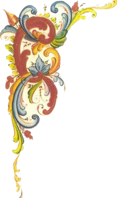

Un recorrido interactivo por las costumbres, pasiones y rincones de la Ciudad Autónoma de Buenos Aires. Respondé el cuestionario y descubrí tu verdadera identidad urbana.

test de barrios
¿DE QUÉ BARRIO DE CABA SOS?
Basándonos en tus respuestas sobre hábitos, gustos y rutinas porteñas, te daremos un veredicto sincero.
¿CÓMO TE CONSIDERÁS?
Seleccioná tu opción para arrancar:
Pregunta
Analizando tus respuestas...
test de barrios
BARRIO
Calculando...
¿Qué te pareció el test?
Si te salió cualquier barrio o tenés una idea de otra pregunta, ¡déjalo acá abajo!
Guía Cultural: Identidad y Barrios de Buenos Aires
La Ciudad Autónoma de Buenos Aires se destaca por la marcada identidad de sus 48 barrios oficiales. Cada zona posee un ritmo único, definido por su arquitectura, hábitos de transporte, propuestas gastronómicas y dinámicas sociales comunitarias.
¿Cómo analizamos la afinidad porteña?
El cuestionario pondera variables cotidianas como la preferencia de medios de movilidad (líneas de subte, colectivos o caminata), lugares de esparcimiento nocturno, elecciones gastronómicas y estilos arquitectónicos de preferencia (caserones tradicionales, edificios modernos o PHs con patio).
Preguntas Frecuentes (FAQ)
1. ¿El test cubre todas las comunas de la Ciudad?Sí, el modelo clasifica los perfiles combinando áreas geográficas (Zona Norte, Centro-Oeste, Sur-Centro, Sur-Sur) con estilos de vida representativos de los distintos barrios porteños.
2. ¿Es necesario ser residente de CABA para participar?No. El cuestionario evalúa costumbres cotidianas y afinidades de consumo, por lo que cualquier persona puede descubrir qué barrio coincide mejor con su personalidad urbana.
Utilizamos cookies propias y de terceros para mejorar tu experiencia de navegación y analizar el tráfico del sitio de acuerdo con nuestra política de privacidad.